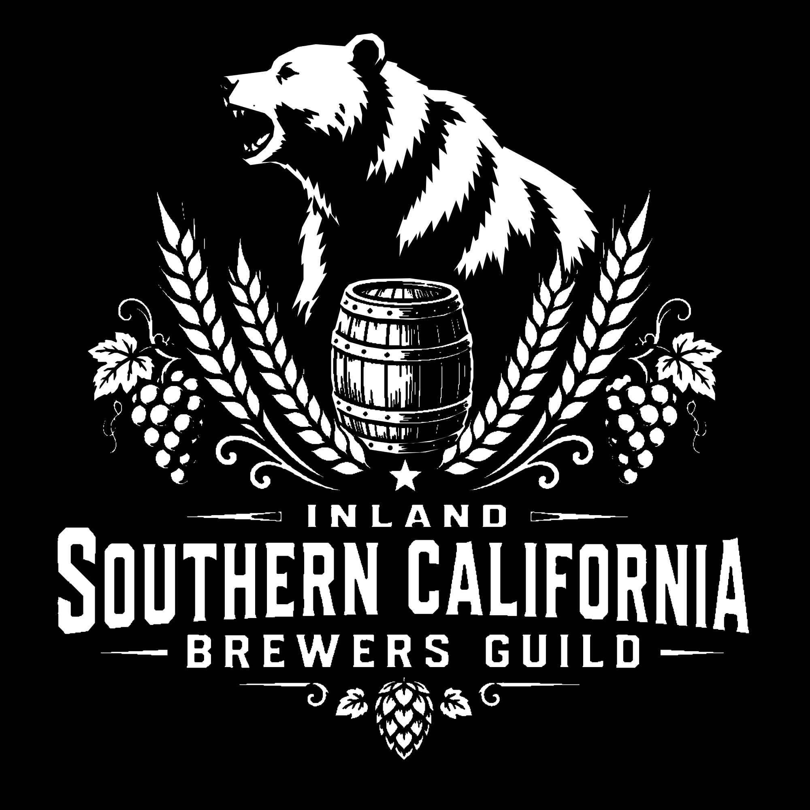

ISC Brewers Guild · For members
What if your membership paid for itself?
The Inland Scan Pass lives on your customers' phones. No app to download, no plastic to lose. One pass, two jobs — and both work for you.
The Inland Scan Pass lives on your customers' phones. No app to download, no plastic to lose. One pass, two jobs — and both work for you.

Customers buy a pass for the year. At every stop on the trail, their first beer is just a nickel, and they earn Guild rewards as they visit more stops. It gives people a reason to walk into taprooms they've never visited — including yours. You earn a share of every pass sold at your counter, enough to offset your dues or even cover them.
Every Scan Pass is also a loyalty pass at every Guild member — breweries, food trucks and more. You choose the rewards: a free snack on visit three, $2 off every fifth visit, whatever fits your business. It costs you nothing, and visits never reset.